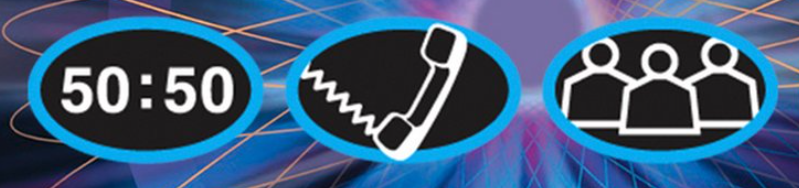

UPUTSTVA IGRE MILIONER:
Igra se sastoji od tri nivoa. Prvi nivo sadrži nešto lakša pitanja, drugi malo teža, a treći najteža pitanja.
Pitanja se tiču Odsjeka za matematičke i kompjuterske nauke, ako Vas to zanima, onda ste na pravom mjestu!
Svako pitanje sadrži četiri ponuđena odgovora, među kojima je samo jedan tačan. Ukoliko tačno odgovorite na pitanje, prelazite na sljedeće i tako dobijate priliku da osvojite veću nagradu. Nakon nekoliko tačnih odgovora, prelazite na idući nivo. Netačan odgovor Vas vodi do završetka igre, ali možete početi novu igru ako budete željeli. Također, odgovor trebate dati u određenom vremenu, ukoliko Vam istekne vrijeme igra zaršava, kao da ste dali pogrešan odgovor. Pitanja su random generisana, tako da ne mora da znači da ćete u novoj igri dobiti isto pitanje kao u prethodnoj.
Kao pomoć, imate opcije:
-
50 : 50 – Budući da svako pitanje sadrži četiri ponuđena odgovora, ako izaberete ovu opciju, dva netačna odgovora će biti eliminisana i onda birate između dva odgovora, među kojima je jedan tačan, a drugi netačan.
-
Pitaj prijatelja – mozete nazvati nekog od Vaših prijatelja za kojeg mislite da Vam može pomoći u toj oblasti. Razgovor traje 30 sekundi, za to vrijeme trebate postaviti pitanje i, ako želite, reći ponuđene odgovore, a onda čekati na odgovor prijatelja. Ako u 30 sekundi Vaš prijatelj ne da odgovor, možete i nakon razgovora razmišljati dok se ne odlučite za konačan odgovor.
-
Pitaj publiku – Ukoliko izaberete ovu opciju, publika će glasati koji je tačan odgovor od ponuđenih i dobit ćete u postotcima rezultate anketiranja publike. Napominjem da publika ne mora nužno dati tačan odgovor.

Po pitanjima možete zaraditi na sljedeći način:
-
pitanje: 100 KM
-
pitanje: 200 KM
-
pitanje: 300 KM
-
pitanje: 500 KM
-
pitanje: 1000 KM
---------------------------------------- (prvi nivo)
-
pitanje: 2000 KM
-
pitanje: 4000 KM
-
pitanje: 8000 KM
-
pitanje: 16000 KM
-
pitanje: 32000 KM
----------------------------------------- (drugi nivo)
-
pitanje: 64000 KM
-
pitanje: 125000 KM
-
pitanje: 250000 KM
-
pitanje: 500000 KM
-
pitanje: 1000000 KM
(KRAJ IGRE)
Ukoliko ste spremni, možete početi klikom ovdje, a ako želite da se vratite na početnu stranicu, pritisnite ovdje.